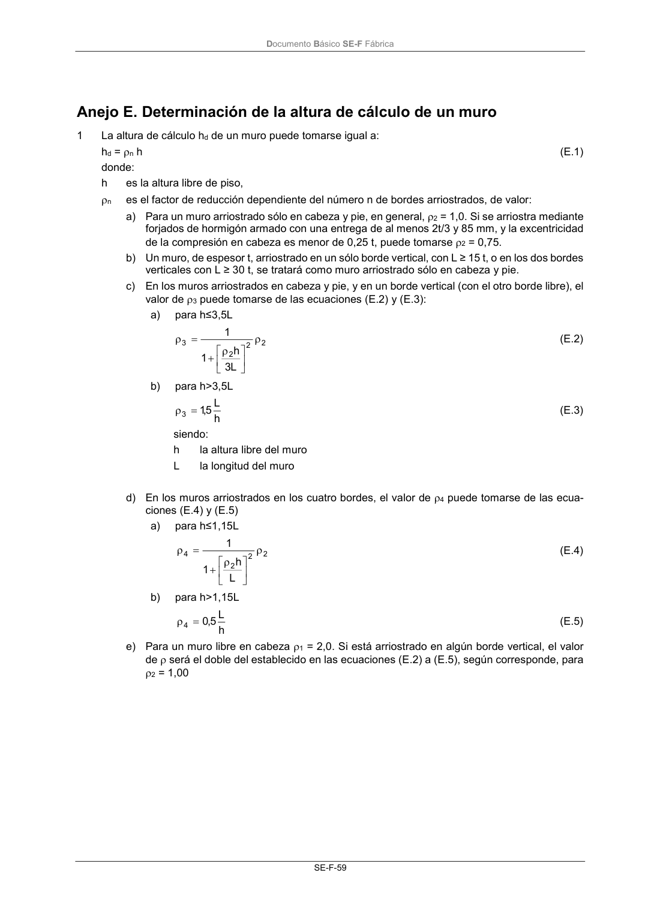
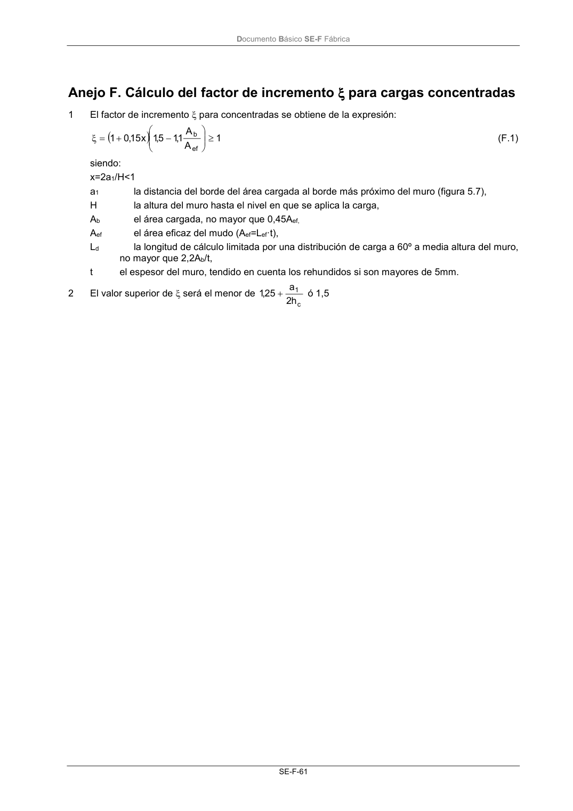

DB-SE-F · Anejo E. Determinación de la altura de cálculo de un muro · versión 2019-12-20 · capa oficial
Formatos: JSON compacto · Markdown · PDF fuente
Ámbito del documento · texto del ámbito · documento y tablas
ID técnico a0118 · PDF pág. 63-65 · jerarquía no validada por persona · contrastado con el literal de la página 63 (candidato tipográfico); no validado por persona · padre: raíz
Anejo E. Determinación de la altura de cálculo de un muro 1 La altura de cálculo hd de un muro puede tomarse igual a: hd = n h (E.1) donde: h es la altura libre de piso, n es el factor de reducción dependiente del número n de bordes arriostrados, de valor: a) Para un muro arriostrado sólo en cabeza y pie, en general, 2 = 1,0. Si se arriostra mediante forjados de hormigón armado con una entrega de al menos 2t/3 y 85 mm, y la excentricidad de la compresión en cabeza es menor de 0,25 t, puede tomarse 2 = 0,75. b) Un muro, de espesor t, arriostrado en un sólo borde vertical, con L ≥ 15 t, o en los dos bordes verticales con L ≥ 30 t, se tratará como muro arriostrado sólo en cabeza y pie. c) En los muros arriostrados en cabeza y pie, y en un borde vertical (con el otro borde libre), el valor de 3 puede tomarse de las ecuaciones (E.2) y (E.3): a) para h≤3,5L 2 2 2 3 L 3 h 1 1 (E.2) b) para h>3,5L h L 5,1 3 (E.3) siendo: h la altura libre del muro L la longitud del muro d) En los muros arriostrados en los cuatro bordes, el valor de 4 puede tomarse de las ecua- ciones (E.4) y (E.5) a) para h≤1,15L 2 2 2 4 L h 1 1 (E.4) b) para h>1,15L h L 5,0 4 (E.5) e) Para un muro libre en cabeza 1 = 2,0. Si está arriostrado en algún borde vertical, el valor de será el doble del establecido en las ecuaciones (E.2) a (E.5), según corresponde, para 2 = 1,00 Documento Básico SE-F Fábrica SE-F-61


PDF fuente redistribuible: copia fiel enlazada en esta página (SHA256 verificado).